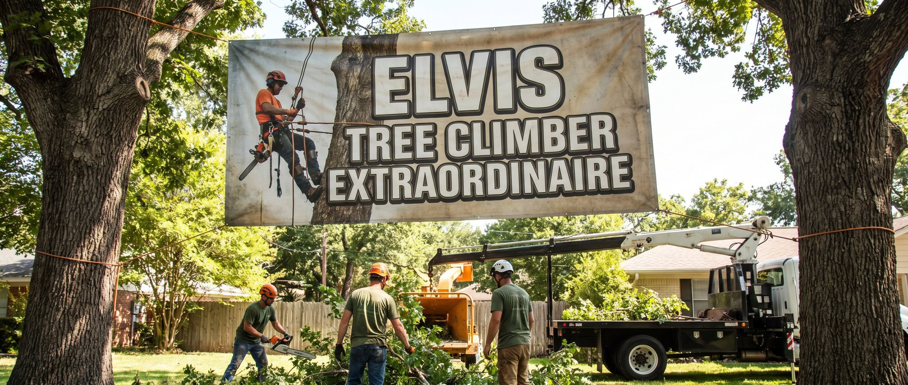
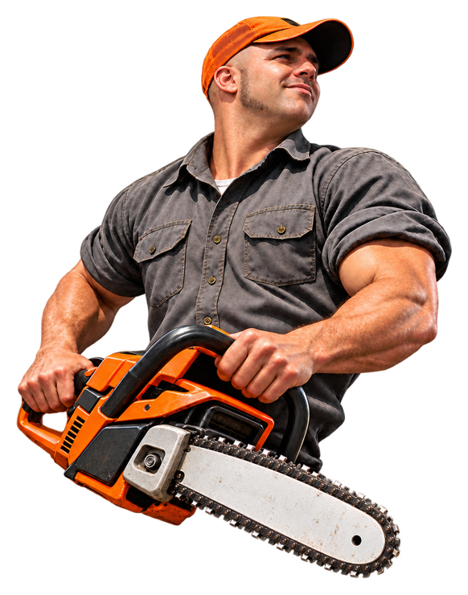
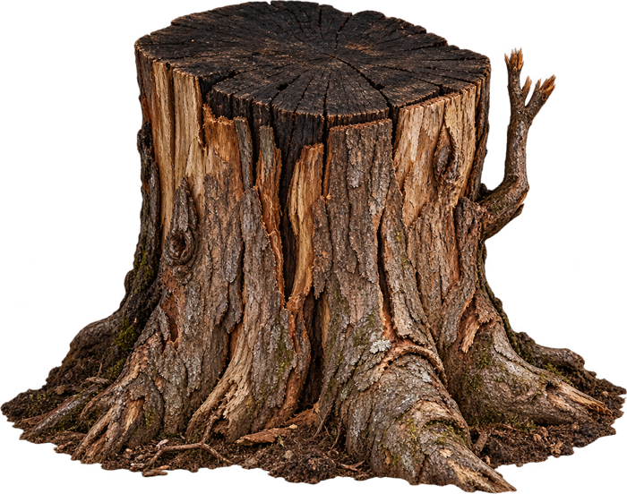
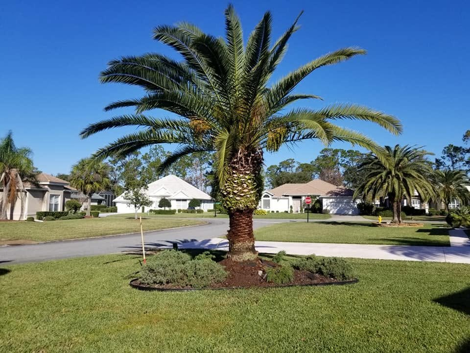

Professional tree trimming, tree removal, and storm cleanup for homes in Palm Coast and Flagler County, done with precision, care, and respect for your property.
☎ 386-569-0163CLICK TO CALL NOW
Comprehensive tree services built on safety, skill, and attention to detail. Every cut planned. Every job cleaned up.
Trimming shapes and tidies your trees for looks and clearance, while pruning removes dead, diseased, or hazardous branches to protect the tree's health and structure.
See more →Safe, controlled removal of dead, damaged, or unwanted trees, even in tight spaces.
See more →

James responded to our phone call immediately, and was at the appointment when he said he would be there. Very knowledgable about the specific trees and shrubs that we were concerned about. Removed shrubs and trimmed up the rest of yard, we are extremely pleased with his work. Would highly recommend him.
He removed one tree, trimmed another one and dug up three tree stumps. He was great. Came when he said, cost was very reasonable, great job of cleaning up afterward. Very efficient. Nice guy.
Did a great job at a great price. He removed a 40ft tree dead tree for me, he and his crew even picked up all the scraps of wood and branches left over. I definitely hire him again.

I'm James Margerelli, but my mother and grandmother have called me “Elvis” since I was a boy climbing magnolia trees in Daytona. Today I bring over 30 years of hands-on experience and a lifelong respect for trees to every job.
Free, no-pressure estimates. Tell Elvis about your trees.
Get a free quote